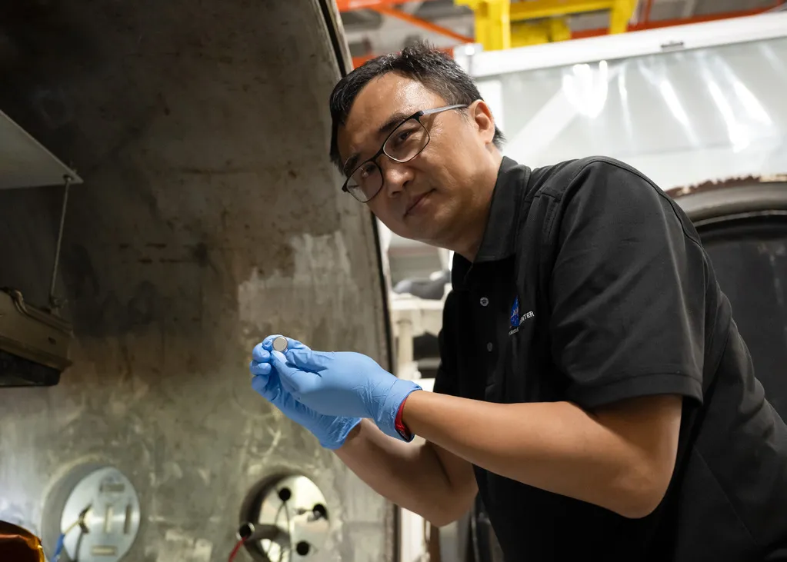

01
Campeão da Libertadores lista Barradão entre estádios de maior pressão no Brasil
A TARDE · 14/10/2026 · 20:35 (Brasília)Fonte original ↗
 www.poder360.com.brDólar sobe a R$ 5,03 e Ibovespa cai 0,18% com inflação dos EUAGazeta do PovoPremiê socialista da Espanha anuncia apoio a Lula na disputa contra Flávio no Brasil
www.poder360.com.brDólar sobe a R$ 5,03 e Ibovespa cai 0,18% com inflação dos EUAGazeta do PovoPremiê socialista da Espanha anuncia apoio a Lula na disputa contra Flávio no Brasil BBC WorldAs primeiras estrelas Michelin da Austrália vão para 11 restaurantes em um estado
BBC WorldAs primeiras estrelas Michelin da Austrália vão para 11 restaurantes em um estado BBC ScienceÍndia e China não são amigas – mas o Nepal quer uni-las contra as ameaças climáticas
BBC ScienceÍndia e China não são amigas – mas o Nepal quer uni-las contra as ameaças climáticas noticias.uol.com.brWashington pede redução das tensões entre Etiópia e Eritreia
noticias.uol.com.brWashington pede redução das tensões entre Etiópia e Eritreia O LiberalUcrânia diz que SpaceX impôs novos limites a terminais Starlink de nível militar sem avisoEstadão‘A política é a continuação da guerra por outros meios’ e outras frases inquietantes de FoucaultWaatea NewsEleição de 2026: Habitação e o êxodo Trans-Tasman em foco enquanto a NZ First e a National revelam políticas
O LiberalUcrânia diz que SpaceX impôs novos limites a terminais Starlink de nível militar sem avisoEstadão‘A política é a continuação da guerra por outros meios’ e outras frases inquietantes de FoucaultWaatea NewsEleição de 2026: Habitação e o êxodo Trans-Tasman em foco enquanto a NZ First e a National revelam políticas www.nsf.govNSF-supported researchers honored with 2026 Nobel Prizesطقس العربChuvas e raios em 13 países árabes neste fim de semanaBPMoneyInflação dos EUA sobe a 3,7% e dificulta corte de juros, avalia estrategista da AvenueRTPTerra Europa Episódio 35 - de 15 out 2026www.msn.comComissário da Defesa propõe Conselho de Segurança Europeu
www.nsf.govNSF-supported researchers honored with 2026 Nobel Prizesطقس العربChuvas e raios em 13 países árabes neste fim de semanaBPMoneyInflação dos EUA sobe a 3,7% e dificulta corte de juros, avalia estrategista da AvenueRTPTerra Europa Episódio 35 - de 15 out 2026www.msn.comComissário da Defesa propõe Conselho de Segurança Europeu O TEMPOGiramundo leva “Alice no País das Maravilhas” a Xangai em missão cultural de BH à China
O TEMPOGiramundo leva “Alice no País das Maravilhas” a Xangai em missão cultural de BH à China opresenterural.com.brBrasil abre 700 mercados para produtos agropecuários desde 2023Herald.co.zw22 anos no topo das comunicações da CUAOlhar DigitalDez anos após anúncio, Starship ainda enfrenta desafios para chegar a MarteHowStuffWorksO lugar mais perigoso do mundo: crime, cobras e calor extremoReliefWebAtualização 2 da região do Pacífico: Monitoramento do El Niño - Resumo regional (em 9 de outubro de 2026)The MercuryADF boosts warfighting skills in Antarctic missionGazeta do PovoMusk diz que governo dos EUA controla limites do serviço militar Starshield após denúncia da Ucrânia
opresenterural.com.brBrasil abre 700 mercados para produtos agropecuários desde 2023Herald.co.zw22 anos no topo das comunicações da CUAOlhar DigitalDez anos após anúncio, Starship ainda enfrenta desafios para chegar a MarteHowStuffWorksO lugar mais perigoso do mundo: crime, cobras e calor extremoReliefWebAtualização 2 da região do Pacífico: Monitoramento do El Niño - Resumo regional (em 9 de outubro de 2026)The MercuryADF boosts warfighting skills in Antarctic missionGazeta do PovoMusk diz que governo dos EUA controla limites do serviço militar Starshield após denúncia da Ucrânia www.gazetaesportiva.comCelta de Vigo x Juventus pela Liga Europa: veja prováveis escalações e onde assistir
www.gazetaesportiva.comCelta de Vigo x Juventus pela Liga Europa: veja prováveis escalações e onde assistir www.dailynews.comO Irã diz que um navio afundou após atingir uma mina no Estreito de Ormuz e outros acontecimentos no Oriente MédioEstado de MinasYYForce Oferece Robôs Humanoides para o Setor de Hospitalidade em uma Parceria Histórica com o Novotel e o Mercure Singapore on StevensDemocracy for the Arab World NowOs EUA querem um cessar-fogo no Sudão, mas não confrontarão o papel dos Emirados Árabes Unidos na guerraSpaceGenealogia planetária: os mundos da Via Láctea pertencem a 1 de 2 ‘famílias’, descobrem os cientistasO LiberalEm Porto Alegre, Flávio promete obras de combate a enchentes e conclusão de malha ferroviária
www.dailynews.comO Irã diz que um navio afundou após atingir uma mina no Estreito de Ormuz e outros acontecimentos no Oriente MédioEstado de MinasYYForce Oferece Robôs Humanoides para o Setor de Hospitalidade em uma Parceria Histórica com o Novotel e o Mercure Singapore on StevensDemocracy for the Arab World NowOs EUA querem um cessar-fogo no Sudão, mas não confrontarão o papel dos Emirados Árabes Unidos na guerraSpaceGenealogia planetária: os mundos da Via Láctea pertencem a 1 de 2 ‘famílias’, descobrem os cientistasO LiberalEm Porto Alegre, Flávio promete obras de combate a enchentes e conclusão de malha ferroviária www.straitstimes.comO Camboja quer abandonar a sua imagem de fraude, mas irá atrás de indivíduos poderosos?UC DavisCientistas identificam a cólera aviária como a principal causa da morte de pinguins na Antártica
www.straitstimes.comO Camboja quer abandonar a sua imagem de fraude, mas irá atrás de indivíduos poderosos?UC DavisCientistas identificam a cólera aviária como a principal causa da morte de pinguins na Antártica www.gazetadopovo.com.brBispos católicos e evangélicos se unem em defesa de imigrantes nos EUAGazeta EsportivaBenfica x Celtic: veja onde assistir ao duelo pela Liga Europa조선일보Swiss Activist Warns Against Pushing North Korea Dialogue
www.gazetadopovo.com.brBispos católicos e evangélicos se unem em defesa de imigrantes nos EUAGazeta EsportivaBenfica x Celtic: veja onde assistir ao duelo pela Liga Europa조선일보Swiss Activist Warns Against Pushing North Korea DialogueÍndice de preços ao consumidor dos Estados Unidos subiu 0,6% em setembro e 3,7% em 12 meses, acima do esperado. Leia no Poder360.
Todos os locais ficam no sul da Austrália, supostamente porque o governo estadual pagou a visita de inspetores incógnitos.
Conseguirá o Nepal unir os dois gigantes regionais para enfrentar uma ameaça climática partilhada nos Himalaias?
O Senado iniciou nesta quarta-feira (14) votação em primeiro turno da Proposta de Emenda à Constituição (PEC 221/2019), que reduz a jornada de trabalho e estabelece dois dias de descanso semanais. Neste momento, os senadores discursam no plenário. O sistema para registrar os votos dos senadores ainda não está aberto. Notícias relacionadas: Calendário especial pode acelerar votação da PEC do fim da escala 6x1. Para ser aprovada, uma proposta de emenda à Constituição precisa passar por cinco sessões de discussão antes da votação em primeiro turno, e por mais três sessões de discussão para votação em segundo turno. Todas as sessões e votações oc
Os Estados Unidos pediram nesta quarta-feira (14) que Etiópia e Eritreia busquem uma "desescalada", diante do temor de uma guerra entre esses países vizinhos do Chifre da África.O secretário de Estado americano, Marco Rubio, enfatizou, durant

Sites oficiais usam .gov Um site .gov pertence a uma organização governamental oficial dos Estados Unidos.
Chuva e relâmpagos em 13 países árabes neste fim de semana Clima Árabe
Autorizações sanitárias alcançaram 99 destinos internacionais, e a ApexBrasil estima US$ 5,8 bilhões em exportações para os novos mercados.
22 anos no topo das comunicações da AUC Herald.co.zw
ADF aumenta habilidades de combate na missão antártica The Mercury
O ministro Cristiano Zanin, do Supremo Tribunal Federal (STF), determinou nesta quarta-feira (14) que a Agência Nacional de Telecomunicações (Anatel) envie à Corte informações sobre falhas das operadoras no acesso gratuito aos sites da Justiça Eleitoral durante o primeiro turno das eleições. No mês passado, Zanin autorizou que pessoas com franquia de dados esgotada tivessem acesso gratuito aos domínios oficiais da Justiça Eleitoral , incluindo os sites do Tribunal Superior Eleitoral (TSE) e dos tribunais regionais eleitorais, para que os eleitores pudessem acessar informações sobre local de votação, justificativa eleitoral, checagem de desinf
Celta de Vigo e Juventus se enfrentam pela segunda rodada da Liga Europa. Veja onde assistir, horário, prováveis escalações e arbitragem.
O Irã afirma que um navio cargueiro afundou após atingir uma mina no Estreito de Ormuz, e um hospital em Gaza afirmou que um ataque israelense matou uma mulher.

Os EUA querem um cessar-fogo no Sudão, mas não vão confrontar agora o papel dos Emirados Árabes Unidos na democracia de guerra para o mundo árabe
O Camboja está a reprimir os compostos fraudulentos, mas não processou figuras poderosas nomeadas pelos EUA, levantando dúvidas sobre se a campanha é verdadeiramente independente. Leia mais em straitstimes.com.
Cientistas identificam cólera aviária como principal causa de mortes de pinguins na Antártica UC Davis
A Conferência dos Bispos Católicos dos EUA e a Associação Nacional de Evangélicos emitiram declaração conjunta pedindo compaixão na política de imigração durante a repressão de Trump.

Veja como planejar uma viagem ao Egito com crianças, escolher a melhor época, visitar pirâmides e aproveitar um cruzeiro pelo rio Nilo.

A NASA fará uma prévia de duas próximas caminhadas espaciais para concluir a instalação do painel solar e o aumento de energia da Estação Espacial Internacional durante uma notícia
A Câmara dos Deputados aprovou nesta quarta-feira (14), por 461 votos favoráveis e quatro contrários, o aumento do teto da receita bruta anual para enquadramento como microempreendedor individual (MEI) e o perdão de dívidas inscritas na dívida ativa da União até 13 de outubro de 2026. Com a aprovação, o limite vai subir progressivamente dos atuais R$ 81 mil para R$ 110 mil em 2027 e R$ 140 mil em 2028. Está é a primeira vez desde 2018 que o teto é reajustado. A matéria passará por análise do Senado. Notícias relacionadas: Senado vota PEC pelo fim da escala 6x1. OEA será acionada por Lula sobre interferência da Meta nas eleições. STF cobra cum
Uma forte chuva na capital paulista deixou pelo menos 17 pontos de alagamento e inundações e três desabamentos, um deles vitimando um morador da Brasilândia, zona norte da cidade. Segundo o Centro de Gerenciamento de Emergências da Prefeitura de São Paulo, a cidade teve alerta para alagamentos até as 17h desta quarta-feira (14). A zona sul registrou a maior quantidade de chuvas, com 67,8mm no Córrego Sapateiro, na região do Parque Ibirapuera, e 64mm na estação que fica no Parque da Aclimação. Notícias relacionadas: Correios disponibilizam coleta para descarte de eletroeletrônicos. Chuvas se intensificam no Centro-Oeste e Sudeste do país. Veja
O capitão da bola branca da Nova Zelândia, Mitchell Santner, está otimista com a possibilidade de as condições em casa ajudarem na série contra a Índia. A série começa com cinco T20Is em 22 de outubro e contará com vários locais. Santner reconhece a forte formação de rebatidas da Índia e enfatiza a necessidade de planos estratégicos de boliche. Ambas as equipes pretendem ganhar impulso antes da Copa do Mundo ODI no próximo ano.

Os estudantes na Flórida ouvirão os astronautas da NASA Jessica Watkins e Luke Delaney enquanto respondem a perguntas STEM pré-gravadas enquanto estão a bordo
Berlim insta Israel a suspender a proibição de trabalho do jornalista alemão Agência Anadolu
Centenas de peixes mortos foram encontrados na ilha de Vangunu em Solomons ABC News & Headlines – Australian Broadcasting Corporation

O primeiro-ministro Andy Burnham deu as boas-vindas ao presidente Zelensky em Downing Street na quarta-feira, enquanto o líder da Ucrânia procura reforçar os seus aliados europeus cinco anos após o início da guerra da Rússia contra a Ucrânia.
Os preços do petróleo subiram nesta quarta-feira (14), impulsionados pelas tensões entre os houthis do Iêmen e a Arábia Saudita, assim como pelo aumento dos relatos de ataques no Estreito de Ormuz.O preço do barril de Brent do Mar do Norte, para entreg
A confiança das empresas cai em meio à ‘ameaça tripla’ de pressões econômicas Broker Daily
Oficial dos EUA adverte que o apoio da ONU à resolução de Cuba dificulta reformas cruciais na ilha CubaHeadlines

Os arqueólogos acreditam que os destroços do naufrágio têm até 4,7 mil anos de idade, remontando à Idade do Bronze Inicial.
O que os aspirantes a cientistas podem aprender com o Prêmio Nobel Education Times de 2026

Jogos, resultados e tabela das eliminatórias da AFCON 2027 · SNA Sport News Africa
A luz solar ilumina as colunas de exaustão de um foguete SpaceX Falcon 9 que transportava a espaçonave Dragon da empresa em 13 de outubro de 2026. Este fenômeno visual é conhecido como “água-viva”; isso acontece perto do nascer ou do pôr do sol, quando a pluma de exaustão do foguete fica intensamente iluminada, criando uma forma brilhante que lembra uma água-viva. A missão decolou […]
A equipe de Joe Biden está reescrevendo sua história sobre os jacobinos de Gaza

A missão visa proteger a base que abriga os Correios mais meridionais do mundo.

A Ucrânia diz que o acesso ao Starlink melhorou, mas ainda enfrenta limites de velocidade que estão interrompendo suas “missões” no campo de batalha.
Gaza: dois milhões de pessoas presas em um terço das suas terras em contracorrente
Sobre a eleição da Nigéria para a intervenção do Conselho de Direitos Humanos das Nações Unidas.ng

Os astrónomos usaram o Observatório de Raios-X Chandra da NASA para decompor a causa de uma notável formação de ondas de rádio que apelidaram de “clave de sol” porque a sua forma distinta se assemelha fortemente ao símbolo musical. Os investigadores descobriram que a clave de sol é provavelmente causada por uma explosão de um buraco negro supermassivo, seguida de uma colisão […]
Rosalind Franklin soube primeiro sobre a estrutura helicoidal do DNA, o cientista
Em 1995, a chef Alice Waters iniciou o Edible Schoolyard em uma escola secundária de Berkeley; 31 anos depois, é The Times of India

Segue-se à morte na semana passada de um homem que chegou ao Quénia depois de viajar da República Democrática do Congo.
Um ano depois da Cimeira de Paz de Sharm El-Sheikh, famílias de Gaza ainda esperam para reconstruir as suas vidas Ahram Online
Prêmio Nobel 2026: As descobertas e ideias que mudam a forma como entendemos o mundo ET Edge Insights

Todos os 21 marinheiros do GFS Pride, com bandeira de Cingapura, foram evacuados com segurança depois que o navio foi atingido por um projétil na terça-feira, disseram as autoridades marítimas.
MAS mantém-se firme enquanto a flexibilização do impulso da IA doma a inflação The Edge Singapore

Um trabalhador é eleito o animal do ano por caçar uma criatura marinha invasora, o ascídia-tapete.

Uma nova legislação está sendo apresentada no parlamento da Austrália na quinta-feira para forçar as grandes empresas de tecnologia a permitir que os usuários desliguem os algoritmos que lhes enviam conteúdo recomendado.
Lançamento do foguete SpaceX visível do centro de Pa. Você viu? A redação da Keystone

É a “espinha dorsal das comunicações militares na Ucrânia” que fornece Internet de alta velocidade vital às forças em todo o país.

Se você já teve seu carro ligado lentamente, ou nem ligou, em uma manhã de inverno particularmente fria, você sabe que as baterias convencionais não gostam de frio extremo. É por isso que os investigadores da NASA estão a trabalhar para desenvolver uma bateria que possa funcionar no frio brutal do Pólo Sul da Lua, onde as temperaturas noturnas caem para menos […]
Antarctica Once Had Wildfires: Tiny Charcoal Fragments Reveal a Burning Forest Near the South Pole La Brújula Verde
UE assina novo protocolo europeu sobre confisco e recuperação transfronteiriça de bens de origem criminosa Informat.ro
Chefe da UA elogia a organização de eventos africanos de alto nível no Egito Gazeta Egípcia

Um efeito de 'água-viva' iluminou o céu nos EUA após o lançamento do foguete SpaceX Falcon 9.
Não é segredo que as empresas farmacêuticas doam aos partidos políticos. Mas ainda é um segredo exatamente quanto e por que MENAFN.com
O governo de Abelardo de la Espriella soma apenas dois meses e, nesta quarta-feira (14), enfrentou um grande desafio nas ruas, que refletem a rejeição popular à sua gestão. Em um cenário de alta tensão política e social, milhares de pessoas marcharam em Bogotá, Cali, Medellín, Bucaramanga, Pereira e Riohacha para expressar rejeição à agenda econômica e de segurança do presidente, ao aumento do custo de vida, à escalada da violência, ao retrocesso de conquistas sociais e às tentativas de criminalizar e coibir o direito ao protesto. Notícias relacionadas: Governo da Colômbia assina decreto que criminaliza protestos sociais. A convocação reuniu
A NASA fornecerá uma atualização sobre seus planos para devolver os astronautas americanos à superfície da Lua até 2028 às 14h. EDT, sexta-feira, 23 de outubro, no Centro Espacial Kennedy da agência, na Flórida. Saiba onde assistir online: https://www.nasa.gov/live Os participantes do briefing incluem: A atualização incluirá detalhes sobre o Artemis III da NASA […]

O Ministério da Energia saudita afirma que o ataque Houthi causou um “incêndio limitado” no complexo da sede da Aramco em Dhahran.